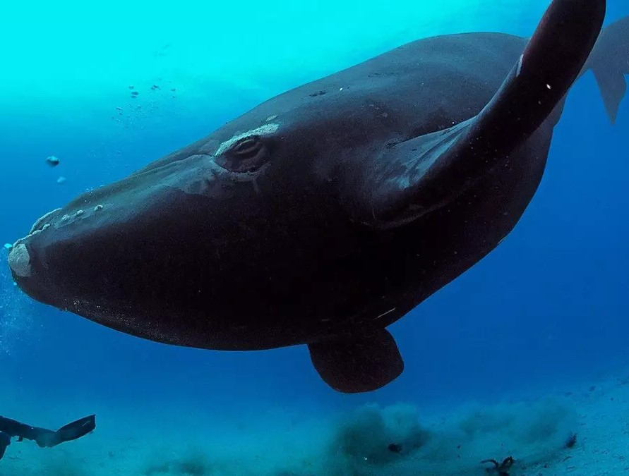

The Biology of Risk
A diver descends into an underwater cave, a scientist researches a dangerous disease, and an entrepreneur invests in a new business. Each time we try something new, we take a risk. Sometimes, like the diver or the businessman, we take big risks, usually for obvious reasons—for fame, for money, or to save lives. Most people will take some risk to achieve one of these goals. But as the danger increases, the number of people willing to go forward decreases. Only extreme risk-takers continue on. The question is: What exactly drives these people to go on when others would stop?
A diver has a close encounter with a southern right whale in waters off the Auckland Islands, New Zealand.
To answer this question, scientists are studying the biological facts involved in risk-taking. Their research focuses on certain chemicals in the brain. An important chemical in risk-taking is dopamine. It motivates us to seek out new and exciting things, and it helps us process emotions like and fear.
People whose brains don’t produce enough dopamine often lack motivation and interest in life. On the other hand, someone who takes risks to accomplish something—to climb a mountain or start a company—that’s driven by motivation, and motivation is driven by dopamine,” says Larry Zweifel, a neurobiologist at the University of Washington. “It compels humans to move forward.”
When we accomplish a task, dopamine produces a feeling of satisfaction: it makes us feel good. The riskier the task, the more dopamine we produce, and the better we feel. Given this, why isn’t everyone trying to climb mountains or start businesses? In part, it’s because of small molecules called autoreceptors.
These receptors control dopamine use in the brain. A person with more autoreceptors tends to be more careful, as there is less dopamine moving freely around his or her brain.
“Think of dopamine like gasoline,” says neuropsychologist David Zald. The autoreceptors, on the other hand, are like the brakes in a car. A person who is less able to use brakes is more likely to take risks.
Dealing with Fear
Dopamine production may make us feel good, but being in a high-risk situation for an extended period of time is also stressful and can be dangerous. Successful risk-takers must learn to control their fear and associate it with high-risk situations to reduce stress and stay safe.
In reality, to risk is something we all learn to do. Take, for example, learning to drive a car. At first, we may be afraid of the travel or freezing in an emergency. With time and training, we will move comfortably into speeding traffic or swerving to avoid hitting a deer. Similarly, a tightrope walker first learns to walk on a beam on the ground. Later, he or she may walk on a high wire.
By this point, the tightrope walker is in control and the activity doesn’t feel dangerous. By practicing a challenging activity, humans can become used to the risk, manage the danger, and control the fear that they feel in those situations.
The work that marine biologist and deep-sea diver Rhian Waller does illustrates this well. She studies life in some of the deepest and coldest waters on Earth. How does Waller control her fear and stay safe in these high-risk situations?
“It comes with practice,” she says. “It’s knowing exactly what to do when something goes wrong. We prepare well for each of our expeditions, and we try to minimize the number of risks we take.”
Of course, a person doesn’t have to be a tightrope walker or a deep-sea diver to be a risk-taker. Taking risks is part of being human. We are all motivated to experience new things. In order to do so, we have to take chances and, of course, we may fail.